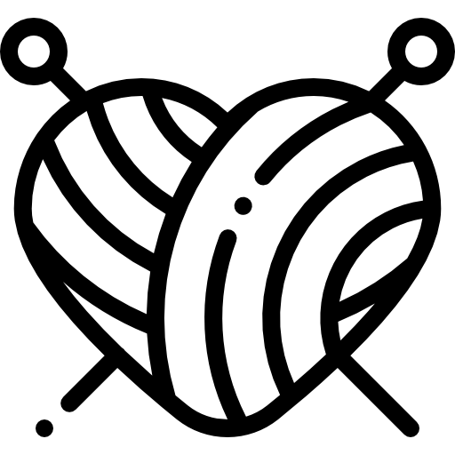
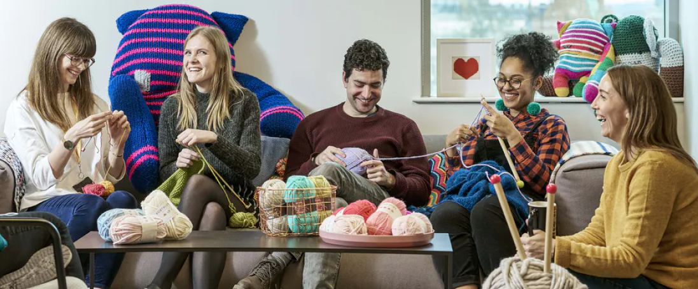
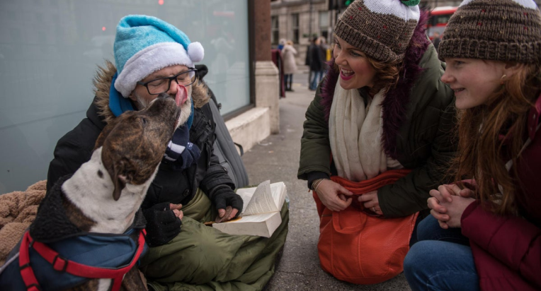
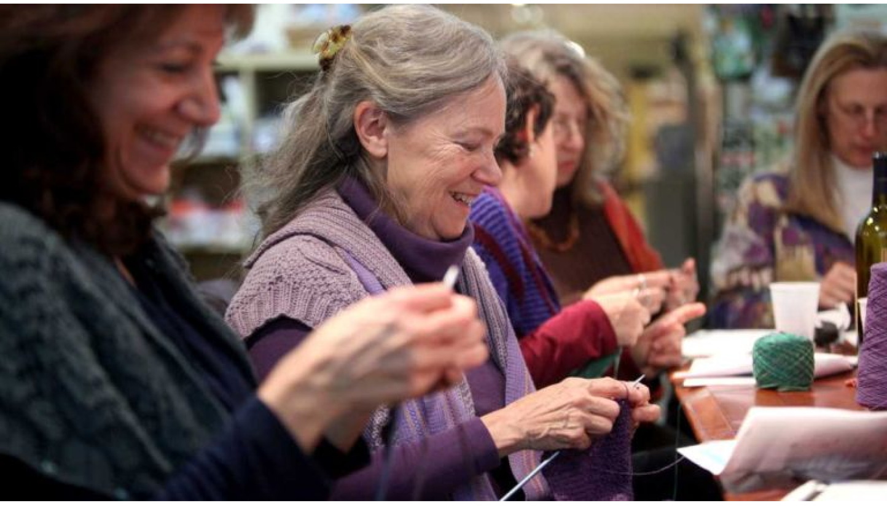
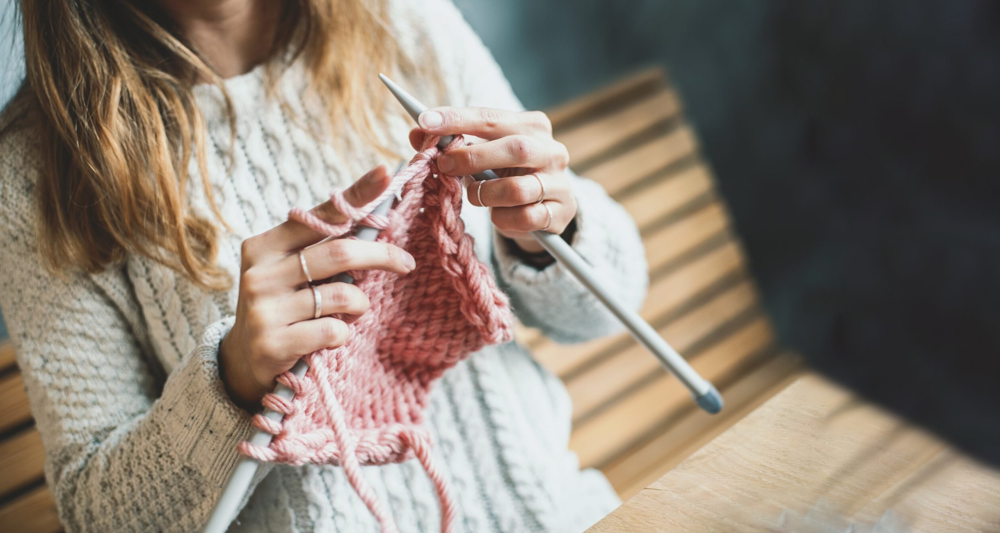
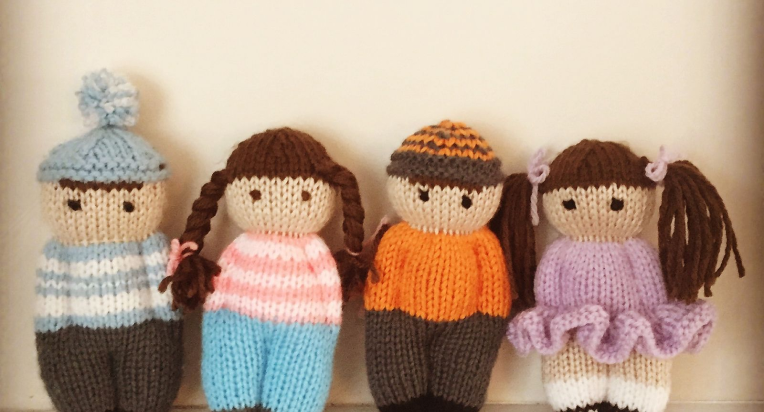
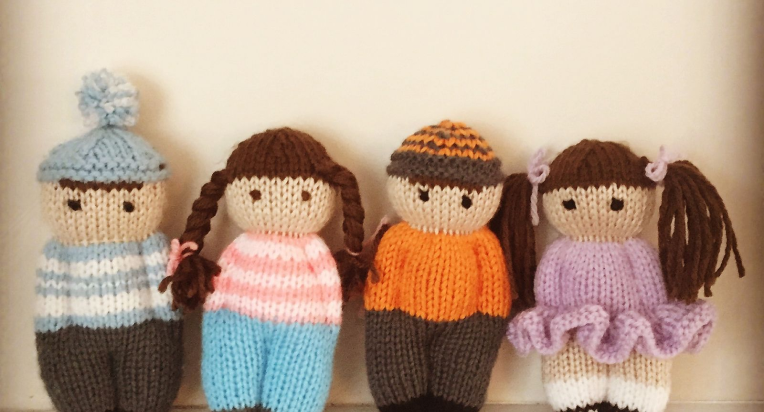
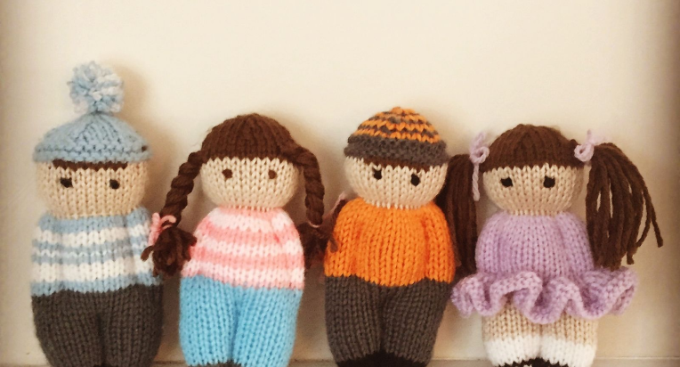

Knitters Unite Style Guide
Primary Colours
#6ADCD5
#334E58
#F6C35D
Secondary Colours
#6B6D76
#F6C3B7
#FF6B6C
Tints
#EBFAF9
#C0E7A9
#F6F6F6
Typography
Mulish
Aa
Light
Aa
Regular
Aa
Bold
H1 - Mulish Bold - size 48px
Line height 70px
H2 - Mulish Bold - size 42px
H3 - Mulish Bold - size 34px
H4 - Mulish Bold - size 26px
H5 - Mulish Bold - size 26px
H4 - Mulish Bold - size 26px
P - Mulish Bold - size 16px
UI Elements
Buttons
Primary
Secondary
Secondary
Primary Active
Secondary Active
Secondary Active
Cards
Logo
Icons

Photos
   



 
